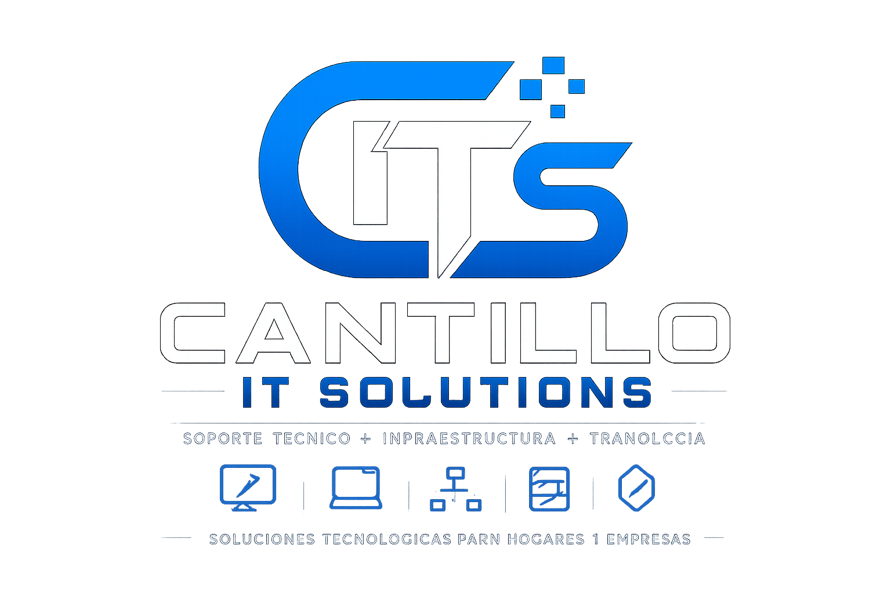

Reparación de computadoras, instalación de Windows 10 y 11, Microsoft Office, soporte técnico, redes e infraestructura tecnológica.
Ver ServiciosHola, soy José Lidier Cantillo Dávila, Bachiller en Ingeniería en Sistemas de Información. Cuento con más de 3 años de experiencia en soporte técnico, mantenimiento de equipos, instalación de Windows, Microsoft Office, impresoras, redes y atención de incidencias tecnológicas.
Años de experiencia
Soporte e Infraestructura
Compromiso
Costa Rica
Diagnóstico y reparación de equipos de escritorio y portátiles.
Windows 10 y Windows 11.
Instalación y configuración.
Configuración y soporte.
Configuración de redes domésticas y empresariales.
Atención remota y presencial.
Contenedores y servicios autoalojados.
Laboratorio personal para aprendizaje y pruebas.
Monitoreo y visualización de infraestructura.
Publicación segura y protección de servicios.
Soluciones adaptadas a cada cliente.
Experiencia en soporte técnico e infraestructura.
Compromiso con la calidad del servicio.